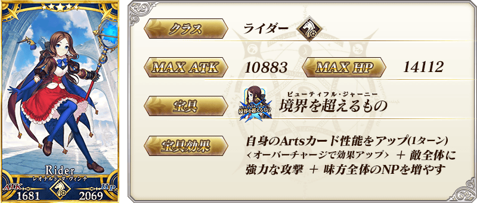
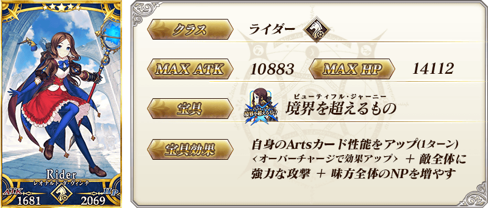
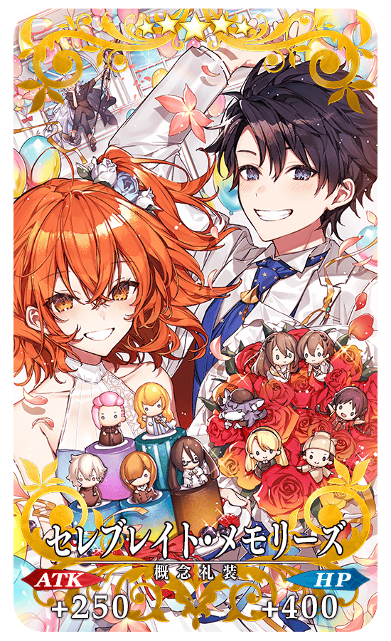
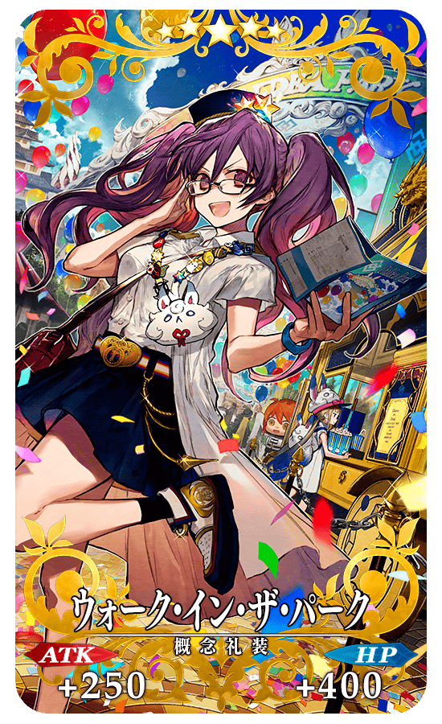
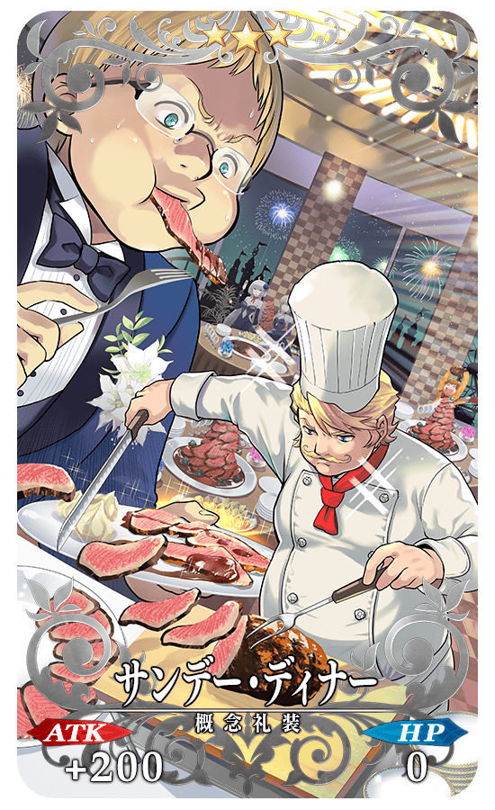
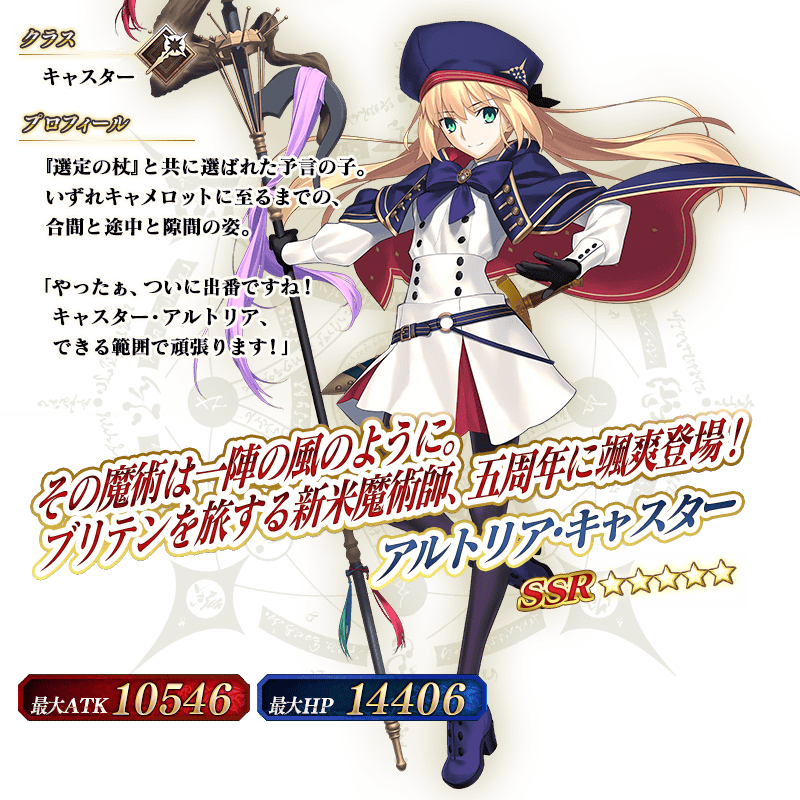
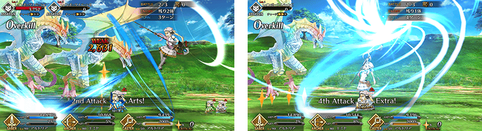
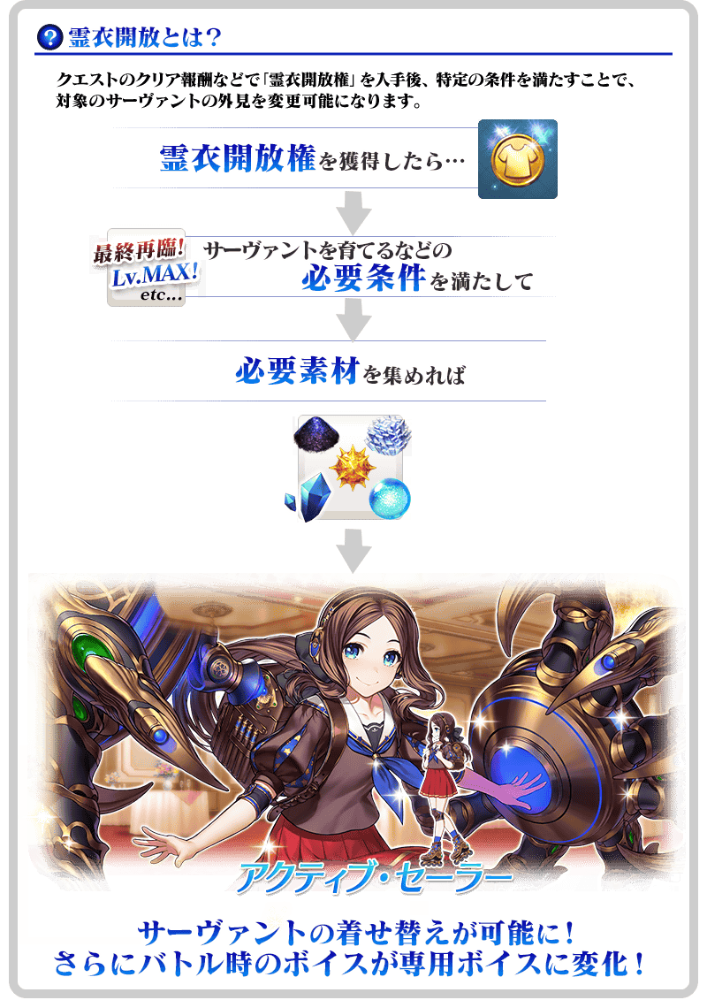
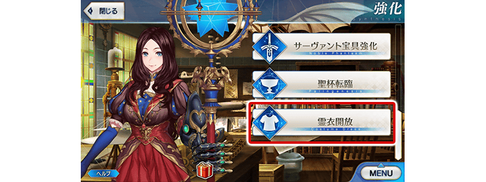
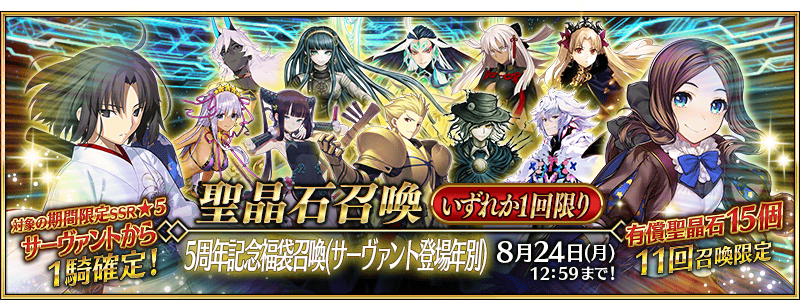

◆「5周年記念Pick Up召喚(每日交替)」期間◆
期間:2020年8月10日(一) 17:30～8月24日(一) 11:59
舉辦期間限定「5周年記念Pick Up召喚(每日交替)」！
為了記念「Fate/Grand Order」5周年，下述的從者以期間限定新登場！ ・★5(SSR)阿爾托莉亞・Caster
本次包含上述從者，下述的期間限定從者以每日交替Pick Up！ ・★5(SSR)阿爾托莉亞・Caster ・★5(SSR)李奧納多・達文西(Rider)
另外，下述的期間限定概念禮裝也以每日交替Pick Up！ ・★5(SSR)セレブレイト・メモリーズ ・★4(SR)ブレイン・ストーミング ・★3(R)フィラー・フラワー
並且，2019年的「FGO Fes. 2019 ～4th Anniversary～ Lostbelt＆亞種特異點Pick Up召喚(每日交替)」中登場的下述的期間限定概念禮裝以每日交替Pick Up！ ・★5(SSR)ウォーク・イン・ザ・パーク ・★4(SR)モーニング・グローリー ・★3(R)サンデー・ディナー
Pick Up期間中，Pick Up對象從者與概念禮裝的出現機率提升！
詳情請在聖晶石召喚畫面左下的召喚詳細確認。
11次召喚中確定1張★4(SR)以上和確定1位★3(R)以上的從者！ ※確定★4(SR)以上包含從者和概念禮裝。 ※本頁面皆為開發中圖片。會有與實際圖片相異的情況。
◆有關從者的注意◆
※請注意本召喚做為每日交替，下述的從者就算舉辦期間中也有不會被抽出來的日子。
・★5(SSR)阿爾托莉亞・Caster
・★5(SSR)李奧納多・達文西(Rider)
※下述的從者在Pick Up期間結束後不會追加到故事召喚。
・★5(SSR)阿爾托莉亞・Caster
・★5(SSR)李奧納多・達文西(Rider)
◆有關概念禮裝的注意◆
※請注意本召喚做為每日交替，下述的概念禮裝就算舉辦期間中也有不會被抽出來的日子。
・★5(SSR)セレブレイト・メモリーズ
・★5(SSR)ウォーク・イン・ザ・パーク
・★4(SR)ブレイン・ストーミング
・★4(SR)モーニング・グローリー
・★3(R)フィラー・フラワー
・★3(R)サンデー・ディナー
※下述的概念禮裝，Pick Up期間中也能靠友情點數召喚獲得。
・★3(R)フィラー・フラワー
※下述的概念禮裝，只限2020年8月12日(三) 23:00～8月14日(五) 22:59、8月16日(日) 23:00～8月17日(一) 22:59、8月22日(六) 23:00～8月23日(日) 22:59的期間中，也能靠友情點數召喚獲得。
・★3(R)サンデー・ディナー
※請注意在自動變還設定登錄★3(R)概念禮裝的情況，下述的概念禮裝會是自動變還的對象。
・★3(R)フィラー・フラワー
・★3(R)サンデー・ディナー
◆「5周年記念Pick Up召喚(每日交替)」Pick Up內容◆
| Pick Up期間 | Pick Up內容 | |
|---|---|---|
| 從者 | 概念禮裝 | |
| 8/10(一) 17:30～ 8/12(三) 22:59 |
★5 阿爾托莉亞・Caster |
★5 セレブレイト・メモリーズ ★4 ブレイン・ストーミング ★3 フィラー・フラワー |
| 8/12(三) 23:00～ 8/14(五) 22:59 |
★5 李奧納多・達文西(Rider) |
★5 ウォーク・イン・ザ・パーク ★4 モーニング・グローリー ★3 サンデー・ディナー |
| 8/14(五) 23:00～ 8/16(日) 22:59 |
★5 阿爾托莉亞・Caster |
★5 セレブレイト・メモリーズ ★4 ブレイン・ストーミング ★3 フィラー・フラワー |
| 8/16(日) 23:00～8/17(一) 22:59 | ★5 李奧納多・達文西(Rider) |
★5 ウォーク・イン・ザ・パーク ★4 モーニング・グローリー ★3 サンデー・ディナー |
| 8/17(一) 23:00～ 8/22(六) 22:59 |
★5 阿爾托莉亞・Caster |
★5 セレブレイト・メモリーズ ★4 ブレイン・ストーミング ★3 フィラー・フラワー |
| 8/22(六) 23:00～8/23(日) 22:59 | ★5 李奧納多・達文西(Rider) |
★5 ウォーク・イン・ザ・パーク ★4 モーニング・グローリー ★3 サンデー・ディナー |
| 8/23(日) 23:00～8/24(一) 11:59 | ★5 阿爾托莉亞・Caster |
★5 セレブレイト・メモリーズ ★4 ブレイン・ストーミング ★3 フィラー・フラワー |
※請注意會以每日交替變更Pick Up從者及Pick Up概念禮裝。

 ※上述「★5(SSR)阿爾托莉亞・Caster」的卡面為靈基再臨第2階段。
※上述「★5(SSR)阿爾托莉亞・Caster」的卡面為靈基再臨第2階段。
 

|  |
★★★★★SSR |

|
★★★★SR |

|
★★★R |
|  |
★★★★★SSR |

|
★★★★SR |
|  |
★★★R |
 ※上述「★5(SSR)阿爾托莉亞・Caster」的立繪為靈基再臨第2階段。

介紹「★5(SSR)阿爾托莉亞・Caster」的寶具演出！
在「Fate/Grand Order」官方網站內的公告中，以影片公開寶具演出，敬請確認。
※「★5(SSR)阿爾托莉亞・Caster」的寶具會根據再臨階段變化名稱與演出。
介紹「★5(SSR)李奧納多・達文西(Rider)」的寶具演出！
在「Fate/Grand Order」官方網站內的公告中，以影片公開寶具演出，敬請確認。
以期間限定舉辦阿爾托莉亞・Caster的體驗關卡！
可迎接「★5(SSR)阿爾托莉亞・Caster」做為支援成員，挑戰期間限定的關卡！
別錯過體驗從者技能與寶具的機會！
※請注意在阿爾托莉亞・Caster的體驗關卡沒有文字冒險部份。
◆阿爾托莉亞・Caster體驗關卡舉辦期間◆
2020年8月10日(一) 17:30～8月24日(一) 11:59
◆開放條件◆
滿足以下條件的御主才能參加
・通過「特異點F 炎上汙染都市 冬木」
◆關卡通過報酬◆
呼符 1張

為了記念「Fate/Grand Order ～5th Anniversary～」，「★5(SSR)李奧納多・達文西(Rider)」的靈衣開放權登場！
通過以期間限定舉辦的靈衣獲得關卡後，可入手上述靈衣開放權。
另外，想開放靈衣的話，除了靈衣開放權外再加上必須滿足一些條件。
現在舉辦中的「Fate/Grand Order ～5th Anniversary～」中，可獲得包合「★5(SSR)李奧納多・達文西(Rider)」5位從者的靈衣開放權。
關於詳情請在此處的公告確認。
◆靈衣獲得關卡舉辦期間◆
2020年8月10日(一) 17:30～8月17日(一) 11:59
◆開放條件◆
滿足以下條件的御主才能參加
・通過「特異點F 炎上汙染都市 冬木」
◆有關靈衣開放權的注意◆
※「★5(SSR)李奧納多・達文西(Rider)」的靈衣開放權只限靈衣獲得關卡舉辦期間才能入手。
※「★5(SSR)李奧納多・達文西(Rider)」的靈衣會配合外觀變化一部份語音。
※請注意未持有從者的情況，可入手靈衣開放權。但無法進行靈衣開放。


「靈衣開放」是自強化畫面進行。
※「靈衣開放」後會自動切換戰鬥角色和圖示。若想回到「靈衣開放」前的狀態和變成其他再臨階段的情況，可自從者詳細畫面變更。 ※進行「靈衣開放」不會讓職階和能力等有所變化。
介紹開放靈衣「アクティブ・セーラー」的「★5(SSR)李奧納多・達文西(Rider)」寶具演出！
在「Fate/Grand Order」官方網站內的公告中，以影片公開寶具演出，敬請確認。
其他還有，「Fate/Grand Order ～5th Anniversary～」和期間限定「5周年記念福袋召喚(從者登場年別)」同時舉辦！
關於詳情，請自下述橫幅確認。
■「Fate/Grand Order ～5th Anniversary～」詳細情報

■「5周年記念福袋召喚(從者登場年別)」詳細情報 